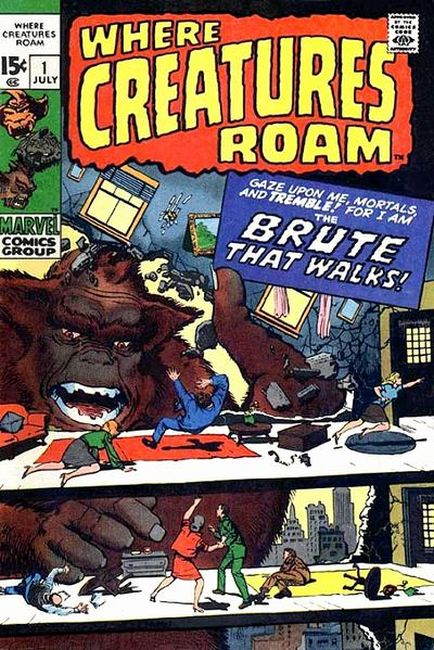

Series: 8 issues 1970 - 1971
Publisher: Marvel
Cover pencils by Jack Kirby and Marie Severin (alterations), inks by Steve Ditko and Marie Severin (alterations). All reprints:
- "I Am the Brute That Walks!", pencils by Jack Kirby, inks by Dick Ayers; Scrawny scientist Howard Avery develops a growth serum so his girlfriend Sally will like him better, but it turns him into a giant monster.
- "Kragoo!", art by Don Heck; An alien soldier is given immense strength and the ability to possess the body of one victim in order to hypnotize the population of their target planet.
- "Fear in the Night," art by Steve Ditko; Two space explorers, a human and a robot, crash-land on an unknown planet where they are menaced by a monster.